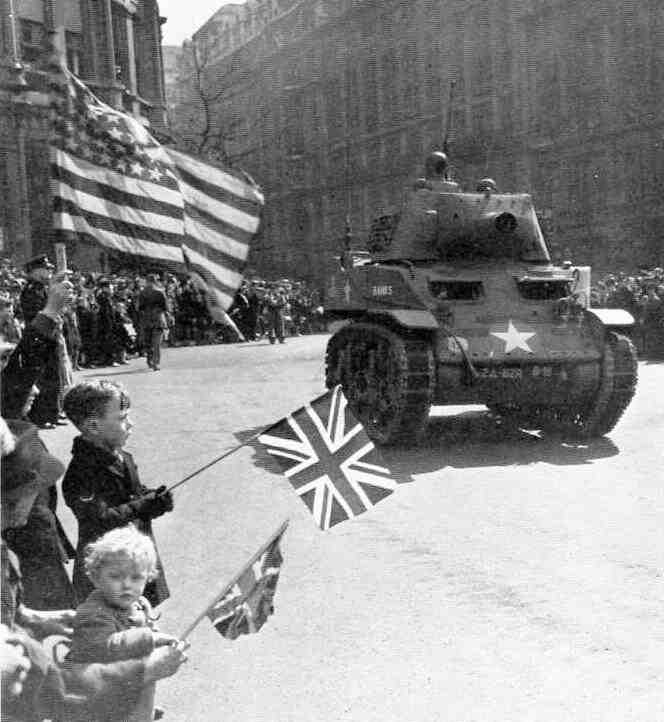

El Reino Unido en la Segunda Guerra Mundial: Resistencia, Liderazgo y Legado Histórico
La participación del Reino Unido en la Segunda Guerra Mundial es un capítulo crucial en la historia del país y del conflicto global que sacudió al mundo entre 1939 y 1945. Desde el inicio del conflicto hasta la victoria final sobre las potencias del Eje, el Reino Unido desempeñó un papel fundamental en la lucha por la libertad y la democracia en Europa y más allá. En este ensayo, exploraremos en detalle la participación del Reino Unido en la Segunda Guerra Mundial, desde sus motivaciones iniciales hasta su legado histórico.
Contexto Histórico: La Preparación para la Guerra
Para comprender plenamente la participación del Reino Unido en la Segunda Guerra Mundial, es esencial examinar el contexto histórico que precedió al estallido del conflicto. En la década de 1930, Europa se vio sacudida por una serie de crisis políticas y económicas, incluida la Gran Depresión y el ascenso del totalitarismo en Alemania, Italia y España. Ante la creciente amenaza del expansionismo nazi, el Reino Unido se embarcó en un proceso de rearme y preparación para la guerra.
El gobierno británico, bajo el liderazgo del Primer Ministro Neville Chamberlain, buscó inicialmente evitar un conflicto directo con Alemania mediante una política de apaciguamiento. Sin embargo, la invasión de Polonia por parte de Alemania en septiembre de 1939 marcó el inicio de la Segunda Guerra Mundial en Europa, y el Reino Unido se vio obligado a tomar medidas para defender su seguridad y la de sus aliados.
La Batalla de Gran Bretaña y la Resistencia Aérea
Una de las primeras pruebas importantes para el Reino Unido durante la Segunda Guerra Mundial fue la Batalla de Gran Bretaña en 1940. Después de la derrota de Francia, Gran Bretaña se convirtió en el último bastión de resistencia contra la Alemania nazi en Europa occidental. La Royal Air Force (RAF) británica se enfrentó a la Luftwaffe alemana en una feroz batalla aérea sobre los cielos de Gran Bretaña, en la que los pilotos británicos demostraron una valentía y habilidad excepcionales.
La determinación y resistencia del pueblo británico durante la Batalla de Gran Bretaña fueron fundamentales para la victoria final sobre la Luftwaffe y la prevención de una invasión alemana del territorio británico. El liderazgo del Primer Ministro Winston Churchill y su capacidad para inspirar a la nación durante los momentos más oscuros de la guerra se convirtieron en símbolos de la fortaleza y el espíritu británicos.
La Campaña del Norte de África y el Mediterráneo
Después de la Batalla de Gran Bretaña, el Reino Unido se embarcó en una serie de campañas militares en el Norte de África y el Mediterráneo, en un esfuerzo por mantener abiertas las rutas marítimas vitales y debilitar la posición del Eje en la región. La Campaña del Norte de África, liderada por el general Bernard Montgomery, fue una lucha prolongada y amarga contra las fuerzas del Eje, que finalmente culminó en la victoria aliada en El Alamein en 1942.
La campaña en el Mediterráneo también fue crucial para el esfuerzo de guerra británico, con operaciones como la evacuación de Dunkerque, la batalla de Creta y la campaña de Italia que ayudaron a asegurar la supremacía aliada en la región y allanaron el camino para la invasión de Sicilia y el posterior avance hacia el continente europeo.
El Frente Occidental y la Participación en Europa
El Reino Unido también desempeñó un papel central en el frente occidental durante la Segunda Guerra Mundial, con su participación en la liberación de Francia y la posterior invasión de Alemania. La invasión aliada de Normandía en junio de 1944, conocida como el Día D, fue un punto de inflexión crucial en la guerra, con las fuerzas británicas desempeñando un papel destacado en la toma de playas clave y el avance hacia el interior del país.
La campaña en el frente occidental fue extremadamente costosa en términos de vidas humanas, pero finalmente llevó a la derrota del Tercer Reich y la liberación de Europa occidental del dominio nazi. La contribución del Reino Unido a esta victoria fue significativa, con millones de soldados británicos luchando valientemente en tierra, mar y aire para asegurar el triunfo final sobre el totalitarismo.

La Batalla del Atlántico y la Guerra Naval
La guerra naval desempeñó un papel crucial en el esfuerzo de guerra británico durante la Segunda Guerra Mundial, con la Royal Navy enfrentándose a la Kriegsmarine alemana en el Atlántico y más allá. La Batalla del Atlántico fue una lucha despiadada por el control de las rutas marítimas vitales entre América del Norte y Gran Bretaña, con los submarinos alemanes amenazando constantemente las líneas de suministro británicas.
La determinación y el coraje de los marineros británicos fueron fundamentales para la victoria final en la Batalla del Atlántico, con la introducción de nuevas tácticas y tecnologías como los convoyes, los escoltas y la inteligencia naval que ayudaron a romper el bloqueo alemán y asegurar el flujo constante de suministros vitales a Gran Bretaña y sus aliados.
La Batalla de Inglaterra y la Resistencia Civil
Otro aspecto importante de la participación británica en la Segunda Guerra Mundial fue la resistencia civil y el espíritu de supervivencia que caracterizó al pueblo británico durante los momentos más oscuros de la guerra. La Batalla de Inglaterra en 1940 fue un ejemplo sobresaliente de la determinación y la resistencia del pueblo británico frente a la adversidad, con la población civil enfrentándose valientemente a los bombardeos alemanes y demostrando una notable capacidad de recuperación y solidaridad.
El liderazgo del Primer Ministro Winston Churchill y su capacidad para inspirar y movilizar a la nación durante los momentos más difíciles de la guerra fueron fundamentales para mantener alta la moral y la determinación del pueblo británico. El famoso discurso de Churchill "Nunca en el campo de la historia humana tantos le debieron tanto a tan pocos" encapsula la gratitud del pueblo británico hacia aquellos que lucharon y sacrificaron tanto por la causa de la libertad y la democracia.
El Papel de la Inteligencia y el Espionaje
La inteligencia y el espionaje desempeñaron un papel crucial en la participación británica en la Segunda Guerra Mundial, con organizaciones como el Servicio de Inteligencia Secreto (MI6) y el Ultra, que descifró los códigos de comunicación alemanes, proporcionando información vital sobre los movimientos y planes del enemigo.
La colaboración entre el Reino Unido y sus aliados en el campo de la inteligencia fue esencial para el éxito de las operaciones militares y para la derrota final del Eje. El trabajo clandestino de los agentes británicos en Europa ocupada y la resistencia local fue crucial para recopilar información sobre las actividades del enemigo y para coordinar operaciones de sabotaje y rescate detrás de las líneas enemigas.
La Victoria y el Legado Histórico
La victoria final sobre las potencias del Eje en 1945 fue un triunfo para el Reino Unido y sus aliados, pero también dejó un legado duradero en la historia del país y del mundo. La Segunda Guerra Mundial transformó el Reino Unido en una nación profundamente marcada por el conflicto, con la pérdida de millones de vidas y vastos sacrificios materiales.
Sin embargo, la participación británica en la Segunda Guerra Mundial también fue un testimonio del coraje, la determinación y el liderazgo excepcional del pueblo británico y sus líderes. El legado de la guerra continúa siendo una fuente de orgullo y inspiración para el Reino Unido y el mundo, recordándonos la importancia de la resistencia, la solidaridad y la lucha por la libertad y la justicia en tiempos de crisis.
Conclusiones
La participación del Reino Unido en la Segunda Guerra Mundial fue un capítulo fundamental en la historia del país y del conflicto global que sacudió al mundo en la primera mitad del siglo XX. Desde la Batalla de Gran Bretaña hasta la victoria final sobre las potencias del Eje, el Reino Unido desempeñó un papel crucial en la lucha por la libertad y la democracia en Europa y más allá.
El legado de la Segunda Guerra Mundial continúa siendo una parte integral de la identidad nacional del Reino Unido, recordándonos la importancia de la determinación, el coraje y el liderazgo en tiempos de crisis. A través del estudio y la reflexión sobre este período oscuro de la historia, podemos honrar el sacrificio y el heroísmo de aquellos que lucharon y murieron por la libertad y la justicia en todo el mundo.